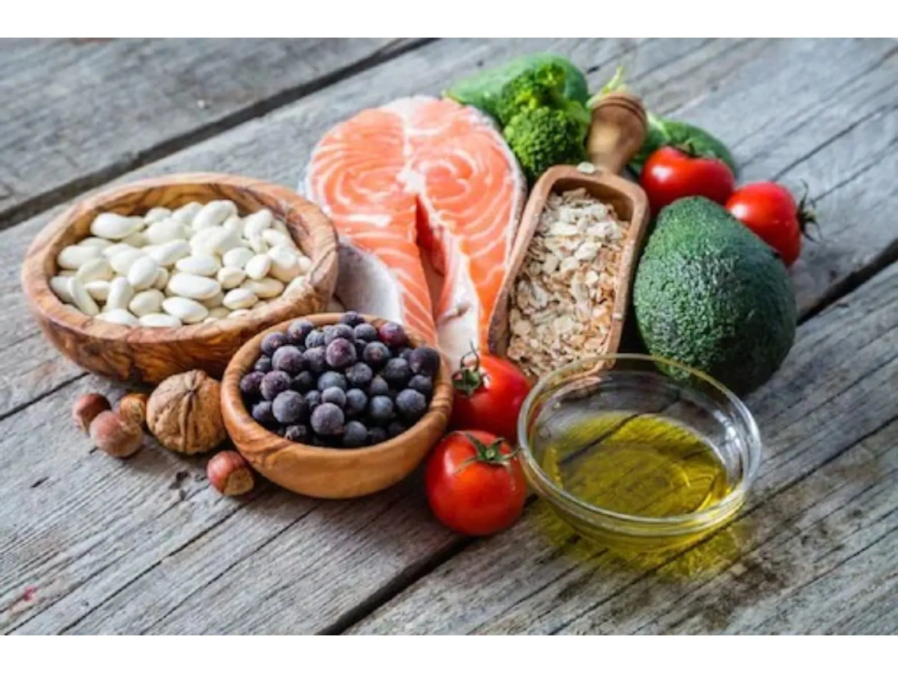
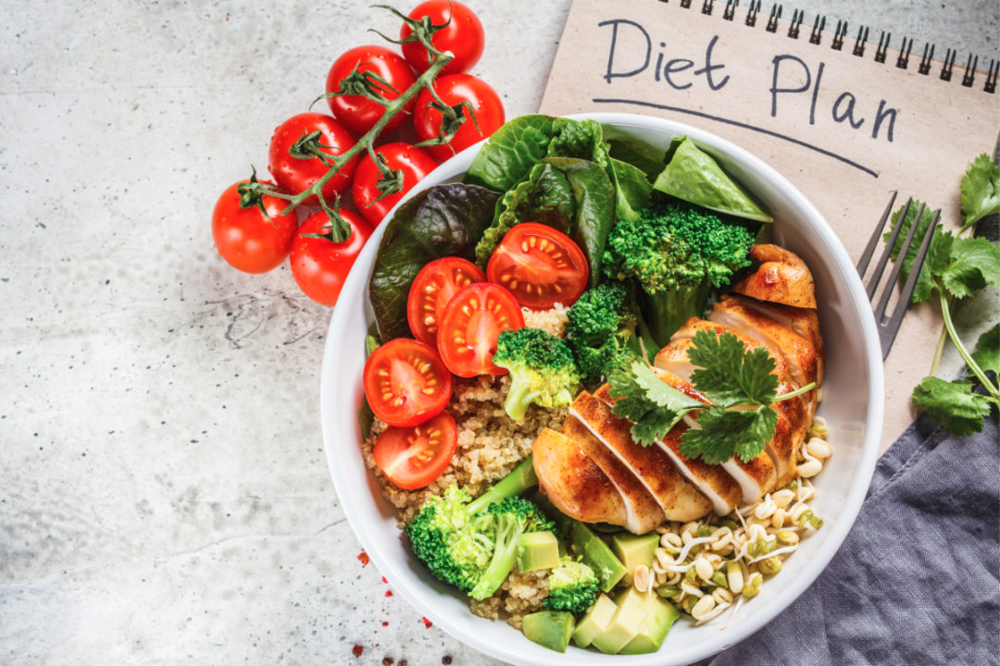
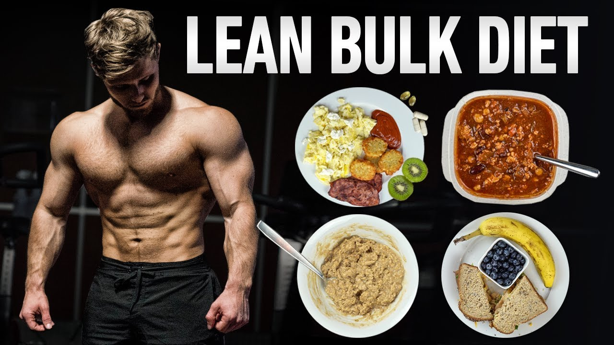

|
NutritionEat a healthy breakfast. If you exercise in the morning, get up early enough to finish breakfast at least one hour before your workout. |
|  |
Weight Gain-Diet PlanHydrating with water. Eating healthy carbohydrates such as whole-grain cereals (with low-fat or skim milk), whole-wheat toast, low-fat or fat-free yogurt, whole grain pasta, brown rice, fruits and vegetables |
|  |
Weight Loss-Diet PlanWhich fruit is best for gym? Image result Apples, oranges, pears (and just about any other fruit) are also great choices for a quick bite before exercise. These various options will help give you the energy you need |
|  |
Go Lean-Diet PlanAfter your workout, your body tries to rebuild its glycogen stores as well as repair and regrow those muscle proteins. Eating the right nutrients soon after you exercise can help your body get this done faster. |